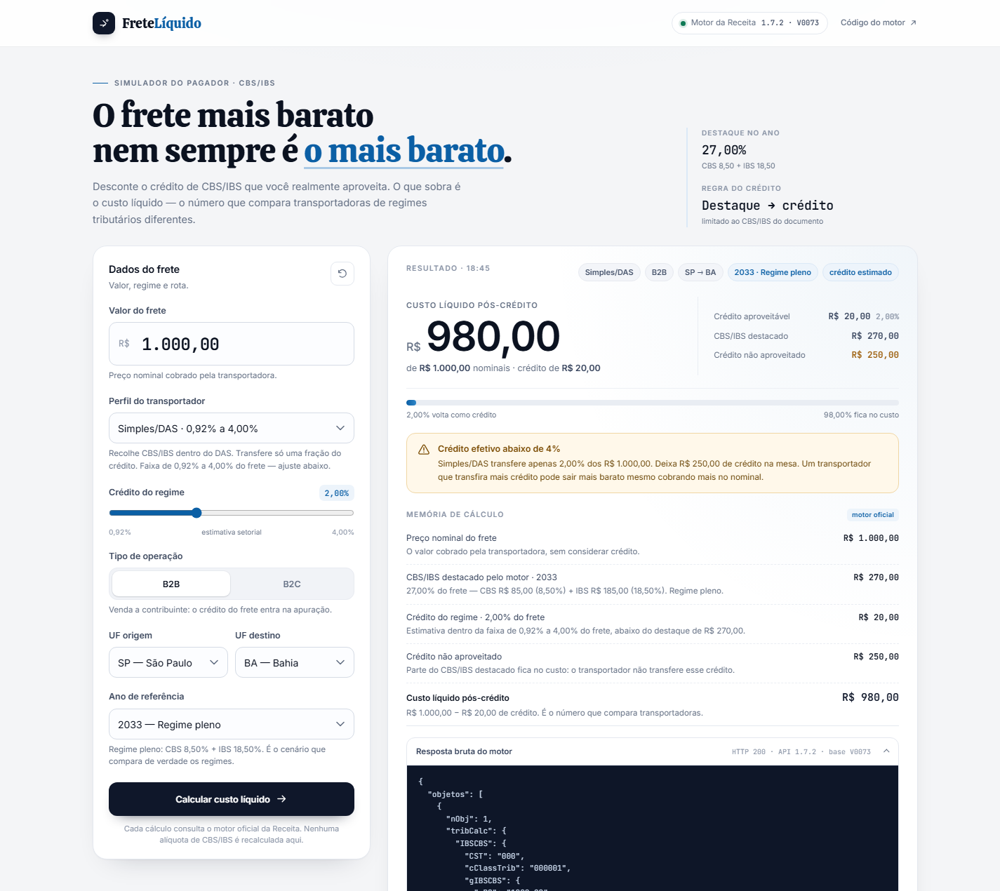
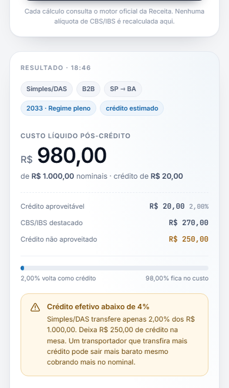

Simples/DAS
R$ 1.000,00 nominais
Custo líquido pós-crédito
R$ 980,00
Crédito aproveitávelR$ 20,00 · 2,00%
Crédito efetivo abaixo de 4%
Simulador do pagador · CBS/IBS
Desconte o crédito de CBS/IBS que a sua empresa realmente aproveita e compare transportadoras pelo custo líquido — o número que decide a compra, não o preço nominal.

Esta página é uma vitrine estática. O cálculo roda localmente, contra o motor oficial.
A conta que muda a decisão
Um frete de R$ 1.000,00, a mesma rota e o mesmo preço nominal. O que separa as duas transportadoras é quanto do CBS/IBS elas conseguem transferir como crédito.
Custo líquido pós-crédito
R$ 980,00
Crédito efetivo abaixo de 4%
Custo líquido pós-crédito
R$ 907,00
Sem alerta: o crédito passa de 4%
a menos no custo líquido, sem nenhuma diferença no preço nominal.
Frete de R$ 1.000,00 · SP → BA · regime pleno (2033) · CBS/IBS apurados pelo motor oficial. A regra de crédito do perfil é aplicada sobre o destaque do documento.
O que está pronto
O simulador cobre a decisão de compra inteira: entrada, crédito, comparação e a prova de como cada número foi apurado.
Valor do frete, perfil do transportador, B2B/B2C, UF de origem e destino, ano de referência.
Crédito em R$ e %, custo líquido e alerta visual quando o crédito efetivo fica abaixo de 4%.
Duas ou três transportadoras ordenadas pelo custo pós-crédito, com a diferença para a melhor.
Os passos da regra e a resposta bruta do motor em JSON, disponível para auditoria em cada resultado.
Arquitetura
Três camadas e uma regra: o CBS/IBS é sempre apurado pelo motor oficial. A aplicação decide apenas quanto do destaque o pagador consegue aproveitar.
Página única em HTML, CSS e JS. Sem framework e sem build step.
app/public
Node 20 valida a entrada, aplica a regra de crédito do regime e monta a memória.
app/server.js · :5180
Java, tabelas oficiais e memória de cálculo. Roda local, na porta 8080.
api-regime-geral.jar · :8080
Sem reimplementar CBS/IBS
O app chama POST /api/calculadora/regime-geral e recebe vCBS,
vIBS e a memória do motor. O destaque é o teto do crédito; o regime do
transportador define só a fração aproveitável.
Requisição
{
"dhFatoGerador": "2033-06-15T10:00:00-03:00",
"uf": "BA",
"municipio": 2927408,
"itens": [{
"nbs": "105011220",
"cst": "000",
"cClassTrib": "000001",
"baseCalculo": 1000.00
}]
}Resposta (recorte)
{
"tribCalc": { "IBSCBS": {
"gIBSCBS": {
"vIBS": "185.00",
"gCBS": { "vCBS": "85.00" }
},
"memoriaCalculo": { "..." }
} }
}Rodar localmente
O run.ps1 inicia o motor oficial se ele ainda não estiver no ar, espera a porta 8080
responder e sobe a interface. Rodar de novo com ela aberta só imprime a URL.
Sem o JAR compilado, rode antes .\mvnw.cmd -DskipTests package. O motor usa a base
SQLite gerada pelo Flyway.
PS> .\run.ps1
Frete Liquido - simulador do pagador de frete
---------------------------------------------
Motor oficial ja esta no ar em http://127.0.0.1:8080
Interface: http://127.0.0.1:5180
Ctrl+C encerra a aplicacao.Responsivo
Em 390px a tabela do comparador esconde as colunas secundárias e mantém o custo líquido visível, sem rolagem horizontal. A memória de cálculo continua a um toque.

Premissas visíveis
O cenário padrão é 2033, com CBS 8,50% e IBS 18,50%. Em 2026, a fase de teste destaca 1% e o crédito de todos os perfis fica limitado a esse valor.
Simples/DAS (0,92% a 4%), híbrido (9% a 9,3%) e autônomo/MEI (1,8% a 4%) são faixas setoriais. O app sinaliza a estimativa e permite ajustar a taxa dentro da faixa.
Na venda ao consumidor final, o pagador não se credita de CBS/IBS: o custo líquido é o preço cheio. A hipótese aparece na memória de cada simulação.